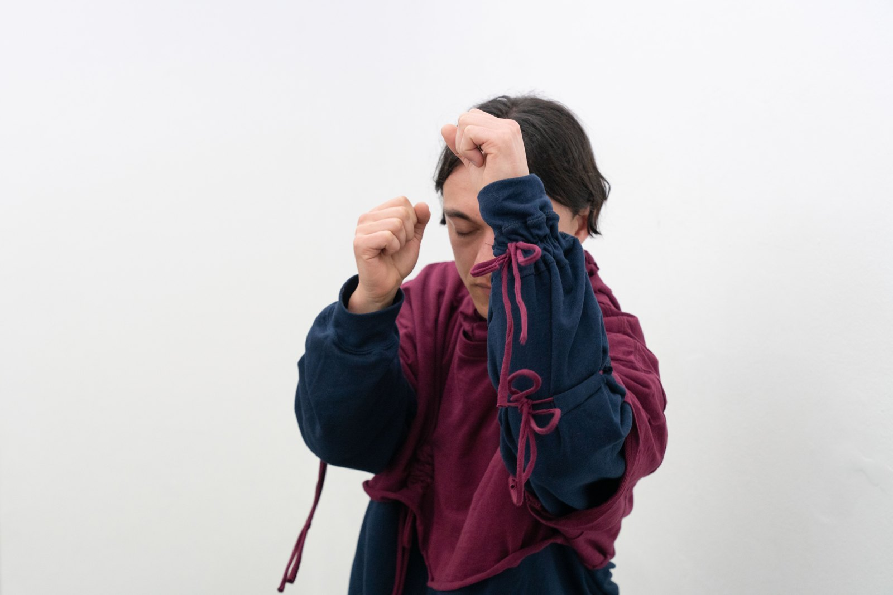

Performance / collaboration
(Embodied) tools for decentralization
Multimedia installation & performance, 15’00’’ in the frame of the exhibition FABULATIVE LORE: Tools and handiness, curated by Alicia Franzke & Kay Pommer, performed by Oyu Ocean and Jan Selçuk
All work ↗
How can we evolve traditions and shape them to reflect our present-day ideas and desires? The exhibition series FABULATIVE LORE explores lore—whether long-standing, fading from memory, undergoing transformation, or imagining futures yet to come. Lore (from the Old English lār, meaning “learning”) refers to knowledge and traditions passed down within a group. It can take many forms—stories, songs, crafts, rituals, symbols, or recipes—shaping identity, preserving skills, and connecting generations.
In TOOLS AND HANDINESS, Lissy Willberg and Eszter Szöke explore through sculptures and performative processes how objects can influence relational thoughts and actions. Do objects carry stories and scores?
Wie können wir Traditionen weiterentwickeln und unseren heutigen Vorstellungen und Wünschen anpassen? Die Ausstellungsreihe FABULATIVE LORE behandelt Lore, die bereits existiert, ins Vergessen gerät, sich gerade neu formt oder in möglichen Zukünften liegt. Lore (vom altenglischen lār, was „Lernen“ bedeutet) bezieht sich auf Wissen und Traditionen, die innerhalb einer Gruppe weitergegeben werden. Sie können viele Formen annehmen - Geschichten, Lieder, Handwerk, Rituale, Symbole oder Rezepte - und prägen die Identität, bewahren Fähigkeiten und verbinden die Generationen.
In TOOLS AND HANDINESS erforschen Lissy Willberg und Eszter Szöke mit Hilfe von Skulpturen und performativen Prozessen, wie Objekte das Denken und Handeln in Beziehungen beeinflussen können. Tragen Objekte Geschichten und Handlungsvorschläge?
[1] For the duo exhibition FABULATIVE LORE: Tools and Handiness with Eszter Szöke the prototype of a sound tool has been developed in collaboration with artist and computer scientist Jonathan Schneider.
[2] Integrated into the sleeves of their costumes, the performers’ mobile devices produce melodic, digital sounds. Their movements modulate various effects, altering the sound in real time. The prototype for this sound generator, developed in close collaboration with artist and computer scientist Jonathan Schneider, utilizes the sensors embedded in conventional smartphones. As the performers – Kata Potrykus aka Oyu Ocean and Jan Selçuk – demonstrate the sound tool, visitors accompany them in exploring this novel instrument. With their eyes closed, the performers investigate the sounds generated by their movements. At the same time, their bodies respond to the evolving soundscape, creating a situation of mutual affectivity. The project explores moments of bodily, social, and spatial orientation, drawing inspiration from the decentralized movement patterns of migratory birds and schools of fish.
[3] In Tools and Handiness, Lissy Willberg and Eszter Szöke explore tools and their influence on our interaction with the world. Just as tools evolve from mechanics to programming, the role of humans shifts from active mastery to passive operation. Willberg and Szöke question the characteristics and conventional uses of various tools, raising the following questions: How does a wagon wheel move when it hangs on a wall? Can a smartphone transform an individual movement into a collective one? (excerpt exhibition text)
[4] (Embodied) tools for decentralization, performance in the framework of FABULATIVE LORE: Tools and Handiness at Bistro21, curated by Alicia Franzke and Kay Pommer, 06. März 2025, Leipzig. Photos: Laura Wichmann
Continue exploring
All projects ↗